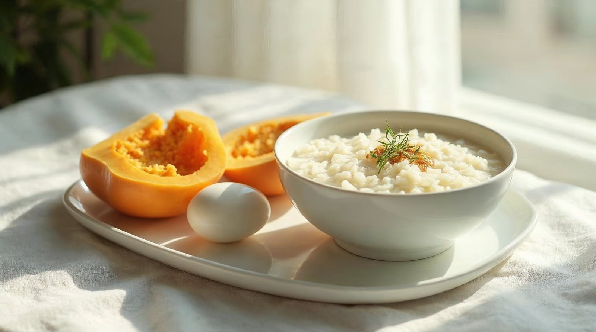
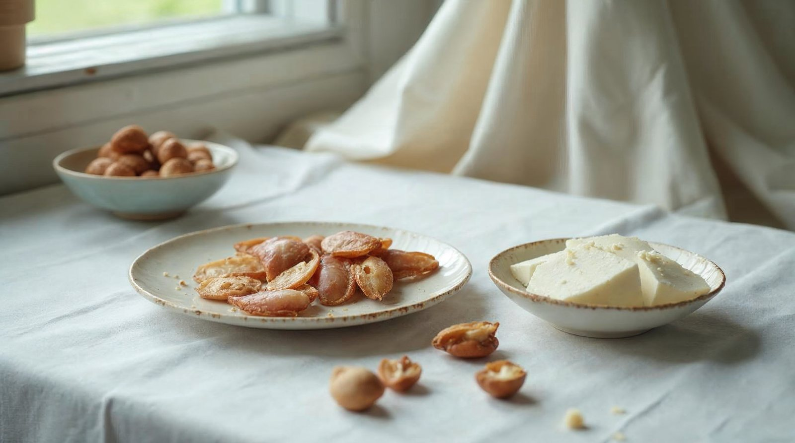
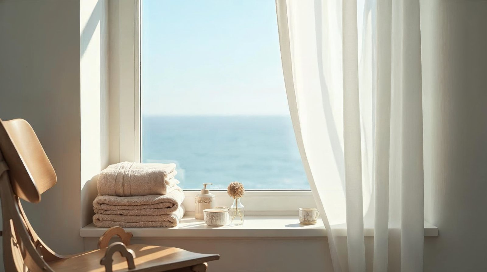
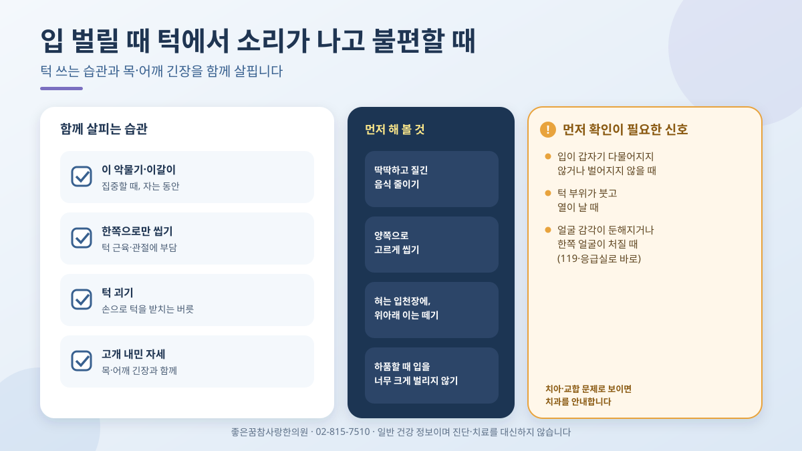

이종호 한의사 감수좋은꿈참사랑한의원 대표원장 (한의사 면허번호 19769)발행 2026-11-23 · 수정 2026-11-26
이 글의 차례
- 왜 이런 불편이 생길 수 있나요
- 턱 불편과 비슷한 다른 불편은 어떻게 구분하나요?
- 먼저 이렇게 여쭙니다
- 왜 바쁘고 긴장한 시기에 턱이 더 불편할까요?
- 자는 동안 이를 악무는지는 어떻게 알 수 있을까요?
- 일상에서 먼저 해 볼 수 있는 것
- 턱을 편하게 쓰는 가벼운 연습이 있을까요?
- 상황별 예시
- 턱이 불편한 동안 식사는 어떻게 하면 좋을까요?
- 스스로 점검해 보세요
- 하루 중 턱에 부담을 주는 습관은 무엇이 있을까요?
- 한의원에서 함께 살필 수 있는 경우
- 첫 방문은 이렇게 진행됩니다
- 진료실에서는 턱 움직임을 어떻게 살펴보나요?
- 얼마나 지켜보고 언제 상담할까요
- 턱 상태는 어떻게 적어 두면 좋을까요?
- 이렇게 기록해 오시면 상담이 쉬워집니다
- 이런 증상은 먼저 확인이 필요합니다
- 관련 글
입을 벌릴 때 턱에서 소리가 나고 불편하면, 먼저 이를 악무는 습관이나 한쪽으로 씹는 습관, 턱을 괴는 버릇이 있는지와 목·어깨 긴장을 함께 살핍니다. 하품을 하거나 딱딱한 음식을 먹을 때 '딱' 소리가 나고 뻐근하다는 분들이 있습니다. 긴장할 때 이를 꽉 무는 습관이 있다고 말씀하시는 경우가 많습니다.
소리만 나고 아프지 않으며 입도 잘 벌어진다면 습관을 조절하며 지켜볼 수 있는 경우가 많습니다. 반대로 입이 벌어지는 폭이 줄었거나, 씹을 때 아프거나, 걸리는 느낌이 잦아졌다면 한 번 살펴보시는 것이 좋습니다. 얼굴 감각이 둔해졌거나 글 아래 '먼저 확인' 항목에 해당하는 경우는 지켜보지 말고 먼저 확인이 필요합니다.
왜 이런 불편이 생길 수 있나요
- 턱관절 안에는 뼈 사이를 받쳐 주는 작은 판(관절원판)이 있는데, 입을 벌리고 다물 때 이 판의 위치가 어긋났다 돌아오며 소리가 날 수 있습니다.
- 이를 악무는 습관, 자는 동안의 이갈이, 한쪽으로만 씹는 습관은 턱 근육과 관절에 부담을 줄 수 있습니다.
- 스트레스와 긴장이 많으면 턱과 목, 어깨 근육이 함께 굳는 경우가 많습니다.
- 고개를 앞으로 내민 자세가 오래되면 턱 주변 근육의 긴장도 달라질 수 있습니다.
- 껌이나 마른오징어처럼 오래 씹는 음식을 즐기거나, 치과 치료로 입을 오래 크게 벌리고 있던 뒤에 불편이 시작되기도 합니다.
- 평소에는 입술을 가볍게 닫아도 위아래 이가 살짝 떨어져 있는 것이 편한 상태인데, 잠이 얕거나 긴장이 많은 시기에는 낮에도 밤에도 이가 맞닿아 있는 시간이 길어질 수 있습니다.
턱 불편과 비슷한 다른 불편은 어떻게 구분하나요?
귀 바로 앞이 아프다고 오시는 분 가운데에는 턱관절이 아니라 다른 곳이 원인인 경우도 있습니다. 그래서 저는 아픈 자리와 함께 무엇을 할 때 아픈지를 꼭 나눠서 여쭙니다.
- 입을 벌리거나 씹을 때 귀 앞이 아프고 소리가 난다면 턱관절과 씹는 근육을 먼저 살핍니다.
- 찬물이나 단 음식에 특정 치아가 시리거나, 한 치아로 씹을 때만 아프다면 치아 쪽이라 치과 진료를 먼저 권합니다.
- 귀가 먹먹하거나 귀에서 소리가 나고 귀 안쪽이 아프다면 귀 쪽 확인이 필요할 수 있습니다.
- 관자놀이가 조이듯 아프고 아침에 특히 심하다면 밤사이 이를 악문 영향일 수 있어 잠과 함께 살핍니다.
턱관절 불편은 귀 앞뿐 아니라 관자놀이, 뺨, 목 옆까지 뻐근함이 퍼지는 경우가 많습니다. 어디까지 퍼지는지 손으로 그려 보여 주시면 살필 범위를 정하는 데 도움이 됩니다. 소리가 오른쪽에서 나는데 뻐근함은 왼쪽에 있는 경우처럼, 소리 나는 쪽과 불편한 쪽이 다를 때도 있어 두 가지를 따로 여쭙습니다.
먼저 이렇게 여쭙니다
- 입을 벌릴 때 어느 쪽에서 소리가 나나요?
- 입이 끝까지 벌어지지 않거나 걸리는 느낌이 있나요?
- 자는 동안이나 집중할 때 이를 악무나요?
- 한쪽으로만 씹는 습관이 있나요?
- 두통이나 목·어깨 결림이 함께 있나요?
- 요즘 잠은 깊이 주무시고, 아침에 턱이 뻐근한가요?
왜 바쁘고 긴장한 시기에 턱이 더 불편할까요?
긴장하면 우리 몸은 어깨를 올리고 이를 맞무는 쪽으로 힘이 들어갑니다. 짧게 지나가면 괜찮지만, 마감이나 시험처럼 긴장이 몇 주씩 이어지면 씹는 근육이 쉬지 못하고 계속 일하게 됩니다.
여기에 잠이 얕아지면 밤사이 이를 악물거나 가는 시간이 늘어나, 아침에 턱이 뻐근하고 관자놀이가 묵직하게 느껴질 수 있습니다. 그래서 턱 이야기를 하다 보면 자연스럽게 요즘 잠과 하루 일정까지 여쭙게 됩니다.
자는 동안 이를 악무는지는 어떻게 알 수 있을까요?
자는 동안의 일은 본인이 알기 어렵습니다. 아래 단서가 여러 개 겹치면 밤사이 턱에 힘이 들어가고 있을 가능성을 생각해 봅니다.
- 아침에 일어나면 턱이나 관자놀이가 뻐근하고, 낮이 되면 조금 풀린다.
- 혀 가장자리에 치아 자국이 물결처럼 나 있다.
- 볼 안쪽에 하얀 줄 같은 자국이 있다.
- 함께 자는 가족에게 이를 간다는 말을 들은 적이 있다.
이갈이가 심하거나 치아가 닳아 보인다면 치과에서 확인을 받고, 필요하면 치과에서 장치를 상의해 보시도록 권합니다. 한의원에서는 그와 함께 잠드는 습관과 턱·목·어깨의 긴장을 살핍니다.

일상에서 먼저 해 볼 수 있는 것
- 딱딱하고 질긴 음식은 줄이고, 크게 베어 무는 음식은 작게 잘라 먹기
- 양쪽으로 고르게 씹기
- 집중할 때 혀를 입천장에 가볍게 두고, 입술은 닫되 위아래 이는 떼어 두기
- 턱을 괴거나 엎드려 자는 습관 줄이기
- 하품할 때 주먹을 턱 아래에 가볍게 받쳐 입이 너무 크게 벌어지지 않게 하기
- 턱이 뻐근한 날에는 따뜻한 수건을 뺨에 10분쯤 대어 두기
- 소리를 확인하려고 일부러 입을 자꾸 벌렸다 다물지 않기
턱을 편하게 쓰는 가벼운 연습이 있을까요?
턱이 뻐근할 때는 많이 움직이기보다 바르게 천천히 움직이는 연습이 도움이 되는 경우가 많습니다. 거울 앞에서 하루 두세 번, 한 번에 1~2분이면 충분합니다.
- 혀끝을 윗니 바로 뒤 입천장에 가볍게 붙인 채, 혀가 떨어지지 않는 만큼만 입을 천천히 벌렸다 다물기를 다섯 번
- 입을 벌릴 때 턱끝이 한쪽으로 휘지 않고 가운데로 내려오는지 거울로 확인하기
- 두 손가락으로 양쪽 뺨의 씹는 근육을 둥글게 가볍게 문지르기
- 어깨를 귀 쪽으로 올렸다가 숨을 내쉬며 툭 떨어뜨리기를 몇 번
연습 중에 소리가 나도 아프지 않다면 이어 가셔도 되지만, 통증이 커지거나 걸리는 느낌이 늘면 멈추고 진료 때 함께 확인합니다.
상황별 예시
- 예를 들어 마감에 쫓겨 모니터 앞에서 하루를 보내는 직장인이라면, 화면을 보는 동안 자신도 모르게 이를 꽉 물고 고개를 내밀고 있는 경우가 많습니다. 모니터 테두리에 '이 떼기'라고 적은 메모를 붙여 두고, 볼 때마다 어깨를 내리고 이를 떼는 연습부터 해 볼 수 있습니다.
- 예를 들어 시험을 앞둔 수험생이 아침마다 턱이 뻐근하고 가족에게 이를 간다는 말을 들었다면, 턱만 보기보다 잠드는 시각과 잠의 깊이, 긴장의 정도를 함께 여쭙습니다.
- 예를 들어 치과 치료로 오래 입을 벌린 뒤나 교정 중에 턱이 불편해진 경우라면, 치과 담당 의사에게 먼저 알리고 상의하시도록 권합니다. 한의원에서는 그와 별도로 턱 주변 근육과 목·어깨의 긴장을 살핍니다.
턱이 불편한 동안 식사는 어떻게 하면 좋을까요?
굶을 필요는 없지만, 턱이 쉬어 갈 수 있게 먹는 방법을 조금 바꿔 보시길 권합니다.
- 사과나 햄버거처럼 크게 베어 무는 음식은 한입 크기로 잘라 먹기
- 깍두기, 견과류, 마른오징어처럼 오래 씹어야 하는 음식은 뻐근한 동안 줄이기
- 밥과 반찬을 양쪽 어금니로 번갈아 씹고, 한쪽으로만 씹고 있지 않은지 가끔 알아채기
- 고기는 결 반대로 얇게 썰거나 부드럽게 익혀 먹기
- 식사를 서둘러 하지 않고, 한입을 넘긴 뒤 다음 한입을 넣기
뻐근함이 줄어들면 평소 음식으로 천천히 돌아가되, 딱딱한 음식은 맨 나중에 다시 시작합니다.

스스로 점검해 보세요
- 입을 벌리거나 다물 때 '딱' 하는 소리가 난다.
- 거울을 보며 입을 벌리면 턱이 한쪽으로 휘어진다.
- 검지·중지·약지 세 손가락을 세로로 모아 입에 넣기 어렵다.
- 아침에 일어나면 턱이 뻐근하거나 관자놀이가 묵직하다.
- 집중하거나 긴장할 때 위아래 이가 맞닿아 있는 것을 자주 알아챈다.
- 한쪽으로만 씹거나 턱을 괴는 버릇이 있다.
- 입이 걸려서 한동안 벌어지지 않았던 적이 있다.
앞의 여섯 가지는 대개 습관 조절부터 해 볼 신호이지만, 세 손가락이 잘 들어가지 않을 만큼 입이 덜 벌어지거나 마지막 항목처럼 입이 걸린 적이 있다면 먼저 확인을 받아 보세요.
하루 중 턱에 부담을 주는 습관은 무엇이 있을까요?
턱 불편은 큰 일 하나보다 하루에도 여러 번 되풀이되는 작은 습관에서 쌓이는 경우가 많습니다. 아래 가운데 해당하는 것을 하나씩만 골라 바꿔 보세요.
- 전화를 어깨와 귀 사이에 끼우고 통화하는 습관
- 휴대폰을 보며 고개를 숙이고 턱을 앞으로 내미는 자세
- 손톱이나 펜 끝, 입술을 깨무는 버릇
- 얼음이나 딱딱한 사탕을 깨물어 먹는 습관
- 한쪽 팔로 턱을 받치고 책이나 화면을 보는 자세
모두 한 번에 바꾸려 하면 오히려 신경이 더 쓰입니다. 일주일에 하나씩, 알아챘을 때 멈추는 것만으로도 충분한 출발이 됩니다. 책상 위나 휴대폰 잠금 화면에 작은 표시를 해 두면 하루에도 여러 번 떠올리기 쉽습니다.
긴장을 푸는 시간을 따로 만드는 것도 도움이 됩니다. 잠들기 30분 전에는 화면을 내려놓고, 따뜻한 물로 샤워한 뒤 어깨와 목을 천천히 돌려 보세요. 저녁 늦은 커피는 잠을 얕게 해 밤사이 턱에 힘이 들어가는 시간을 늘릴 수 있어 오후 이른 시간까지로 줄여 봅니다.
한의원에서 함께 살필 수 있는 경우
- 턱 불편이 이어지는 경우 턱 움직임과 목, 어깨의 긴장을 함께 살핍니다.
- 필요하다고 판단되면 추나와 침을 상태에 맞게 이어서 씁니다.
- 치과 진료가 필요하다고 판단되면 치과를 안내합니다.
첫 방문은 이렇게 진행됩니다
- 이야기 듣기: 소리가 나는 쪽과 처음 알게 된 시기, 아픈지 여부, 입이 벌어지는 정도, 이 악물기나 이갈이, 치과 치료나 교정 여부를 먼저 충분히 듣습니다.
- 맥 짚기와 몸 살피기: 모든 분께 맥부터 짚어 잠과 긴장, 소화까지 몸 전체 상태를 살핍니다.
- 턱과 목 확인: 입을 벌리고 다무는 동안 벌어지는 폭과 휘어지는 방향, 소리가 나는 시점을 보고, 관자놀이와 뺨의 씹는 근육, 목과 어깨의 긴장, 고개 위치를 함께 살핍니다.
- 방향 정하기: 턱 주변과 목·어깨에 침, 약침, 온열 가운데 상태에 맞는 방법을 정하고, 필요하다고 판단되면 추나를 부드럽게 하며 강도는 말씀을 들으며 조절합니다. 치아나 교합 문제로 보이면 치과를 안내합니다.
- 귀가 전과 다음 방문: 일상에서 이를 떼는 연습을 알려 드리고, 다시 오시면 지난번 입이 벌어지던 폭과 아침 뻐근함이 그사이 어땠는지 이어서 여쭙습니다.
진료실에서는 턱 움직임을 어떻게 살펴보나요?
입을 위아래로 벌리는 것만 보지 않고, 턱을 좌우로 움직이거나 아래턱을 앞으로 내밀어 보는 동작도 함께 확인합니다. 어느 쪽으로 움직일 때 소리가 나는지, 양쪽 움직이는 폭이 비슷한지를 보면 어느 쪽 관절과 근육에 부담이 더 있는지 짐작할 수 있습니다.
손가락을 귀 바로 앞에 대고 입을 벌리면 관절이 움직이는 느낌을 함께 느낄 수 있습니다. 진료 때 직접 손을 대어 보시게 하고, 집에서 연습할 때도 같은 자리를 짚어 보시도록 알려 드립니다. 양쪽 관절이 함께 부드럽게 움직이는 느낌이 드는지 스스로 확인해 볼 수 있습니다.

얼마나 지켜보고 언제 상담할까요
- 아프지 않고 소리만 나는 경우는 딱딱한 음식과 이 악물기를 줄이며 지켜볼 수 있습니다.
- 뻐근함이나 통증이 함께 있다면 부드러운 음식과 습관 조절을 2주쯤 이어 가 보고, 그대로이거나 더 심해지면 상담을 받아 보세요.
- 입이 벌어지는 폭이 줄거나 걸리는 느낌이 잦아지면 기다리지 말고 확인합니다.
- 습관 조절을 하는 동안에는 아침 뻐근함과 입이 벌어지는 폭을 일주일에 한 번씩 같은 방법으로 재어 적어 두면, 상담 시점을 정하기가 쉬워집니다.
턱 상태는 어떻게 적어 두면 좋을까요?
일주일만 아래처럼 적어 보셔도 턱이 언제 불편해지는지 흐름이 보입니다. 휴대폰 메모장에 하루 한 줄이면 충분합니다.
- 아침에 일어났을 때 턱 뻐근함을 0부터 10까지 숫자로
- 낮에 이를 악물고 있는 것을 알아챈 횟수
- 그날 먹은 딱딱하거나 질긴 음식
- 그날의 긴장 정도와 잠든 시각
이렇게 적다 보면 '회의가 많은 날 다음 아침에 더 뻐근하다'처럼 본인만의 규칙이 보이기도 합니다. 그 규칙을 알면 바쁜 날 저녁에 턱을 미리 풀어 주는 식으로 대비할 수 있습니다.
이렇게 기록해 오시면 상담이 쉬워집니다
- 소리가 나는 쪽과 처음 알게 된 시기
- 입을 벌릴 수 있는 정도(손가락 몇 개가 들어가는지)
- 이갈이를 들은 적이 있는지, 아침에 턱이 뻐근한지
- 치과 치료나 교정 중인지
- 불편이 심해지는 때(마감, 시험, 잠이 부족한 날 등)
이런 증상은 먼저 확인이 필요합니다
- 입이 갑자기 다물어지지 않거나 벌어지지 않는 경우
- 턱이나 얼굴이 붓고 열이 나는 경우
이런 신호가 있으면 한의원보다 가까운 병원이나 응급실을 먼저 찾으세요.
관련 글

여쭙는 것
- 입을 벌릴 때 어느 쪽에서 소리가 나나요?
- 입이 끝까지 벌어지지 않거나 걸리는 느낌이 있나요?
- 자는 동안이나 집중할 때 이를 악무나요?
생활에서 해 볼 것
- 딱딱하고 질긴 음식은 줄이고, 크게 베어 무는 음식은 작게 잘라 먹기
- 양쪽으로 고르게 씹기
- 집중할 때 혀를 입천장에 가볍게 두고, 입술은 닫되 위아래 이는 떼어 두기
한의원에서 함께 살필 것
- 턱 불편이 이어지는 경우 턱 움직임과 목, 어깨의 긴장을 함께 살핍니다.
- 필요하다고 판단되면 추나와 침을 상태에 맞게 이어서 씁니다.
- 치과 진료가 필요하다고 판단되면 치과를 안내합니다.
먼저 확인이 필요한 신호
- 입이 갑자기 다물어지지 않거나 벌어지지 않는 경우
- 턱이나 얼굴이 붓고 열이 나는 경우
한눈에 보는 표
| 구분 | 핵심 |
|---|---|
| 여쭙는 것 | 입을 벌릴 때 어느 쪽에서 소리가 나나요? 입이 끝까지 벌어지지 않거나 걸리는 느낌이 있나요? |
| 생활에서 해 볼 것 | 딱딱하고 질긴 음식은 줄이고, 크게 베어 무는 음식은 작게 잘라 먹기 양쪽으로 고르게 씹기 |
| 한의원에서 함께 살필 것 | 턱 불편이 이어지는 경우 턱 움직임과 목, 어깨의 긴장을 함께 살핍니다. 필요하다고 판단되면 추나와 침을 상태에 맞게 이어서 씁니다. |
| 먼저 확인이 필요한 신호 | 입이 갑자기 다물어지지 않거나 벌어지지 않는 경우 턱이나 얼굴이 붓고 열이 나는 경우 |
자주 묻는 질문
턱 소리만 나고 아프지 않으면요?
입이 잘 벌어지고 아프지 않다면 딱딱한 음식과 이 악물기를 줄이며 지켜볼 수 있습니다. 다만 소리가 잦아지거나 걸리는 느낌이 생기면 습관을 함께 살펴보길 권합니다.
치과와 한의원 중 어디를 가야 하나요?
치아와 교합 문제는 치과, 근육과 자세는 함께 살필 수 있습니다. 필요하면 치과 진료를 안내합니다. 교정이나 보철 치료 중이라면 치과에 먼저 알려 주세요.
껌을 씹으면 턱 운동이 되나요?
턱이 불편할 때 껌을 오래 씹으면 오히려 부담이 될 수 있어 줄이시길 권합니다.
턱 소리가 나는데 입을 크게 벌리는 운동을 해도 되나요?
일부러 크게 벌리기보다 혀를 입천장에 둔 채 천천히 벌렸다 다무는 연습을 권합니다. 아프거나 걸리는 느낌이 늘면 멈추고 진료 때 함께 확인합니다.
진료 시간은 어떻게 되나요?
좋은꿈참사랑한의원은 평일 09:30~20:00(점심 13:00~14:00), 토·일·공휴일 09:30~15:00에 진료합니다.
좋은꿈참사랑한의원은 재진 때 지난번 이야기부터 이어서 여쭙니다. 진료시간과 예약은 오시는 길에서 확인하세요.
어디서 상담받을 수 있나요?
좋은꿈참사랑한의원은 서울 동작구 만양로2길 2 신성빌딩 3층·5층(서울 동작구 상도동, 7호선 상도역 3번 출구 근처)에 있습니다. 한의사 3명(이종호 대표원장, 조영기 수석진료원장, 정원영 진료원장)이 진료합니다. 진료시간은 평일 09:30~20:00(점심 13:00~14:00), 토·일·공휴일 09:30~15:00이며, 방문 전 전화로 확인을 권합니다. 예약은 네이버 예약, 카카오톡 상담, 전화 02-815-7510로 받습니다.
이 글은 일반적인 건강 정보이며 개인의 진단이나 치료를 대신하지 않습니다. 증상이 있거나 복용 중인 약이 있다면 진료를 통해 확인하세요. 치료 효과는 개인마다 다를 수 있습니다.
작성 기준: 일반적으로 알려져 있는 건강 정보를 참고해 정리했습니다(대표원장 감수). 증상 기록은 1~2주 동안 하루 1회, 비슷한 시간에 적어 오시면 지난 상태와 비교하기 쉽습니다.